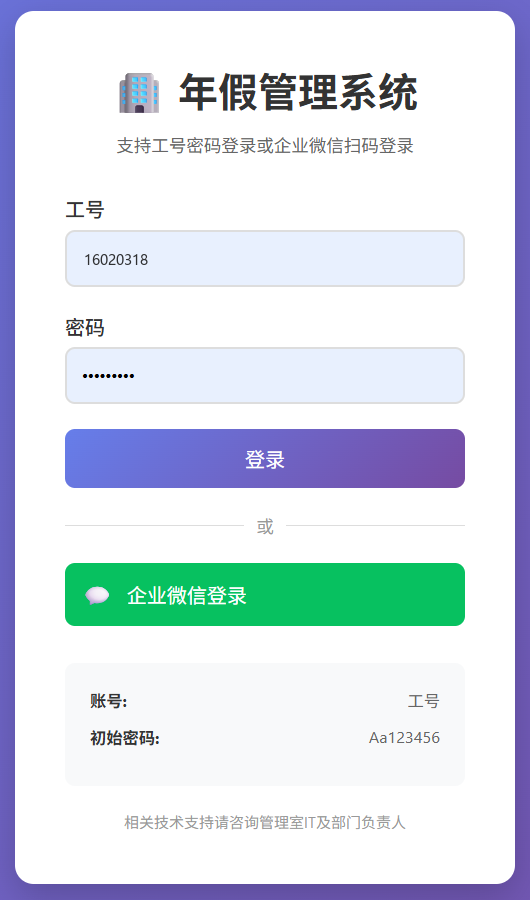
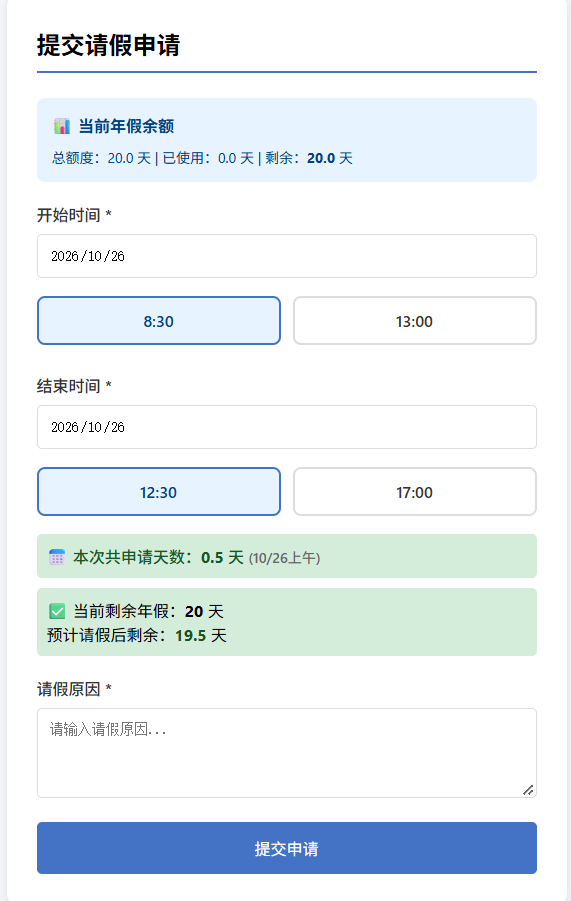
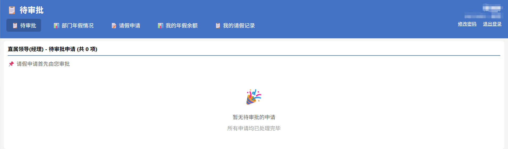
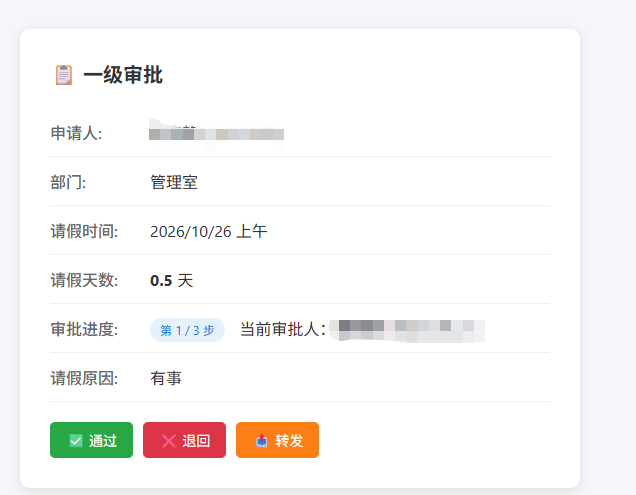
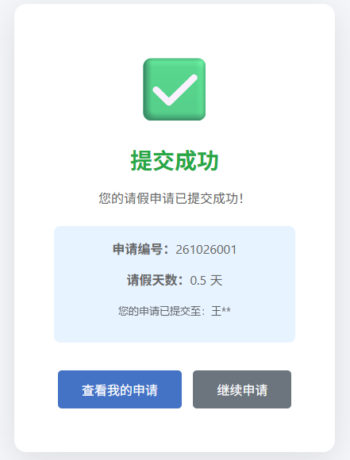
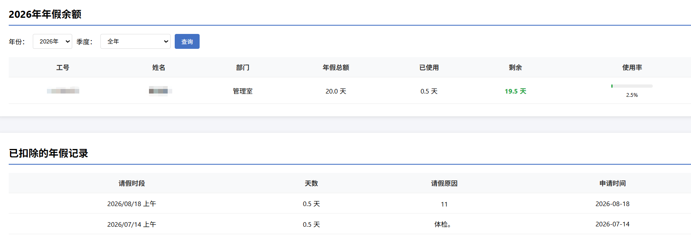
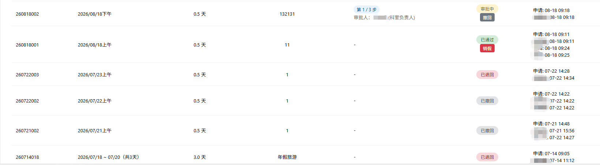
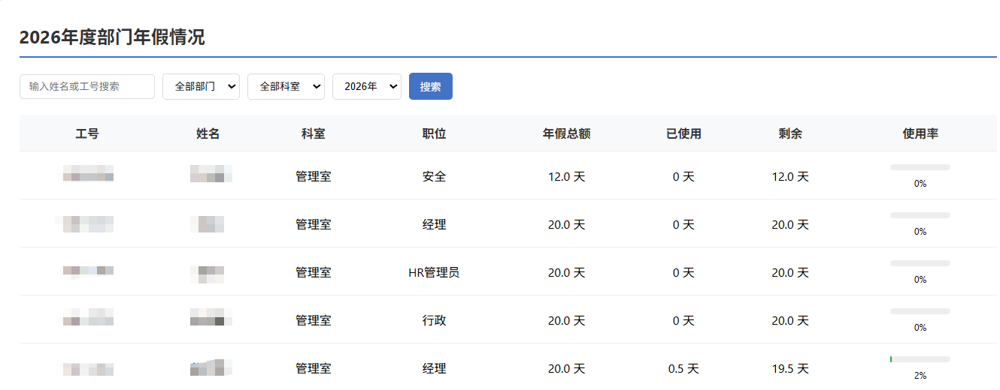
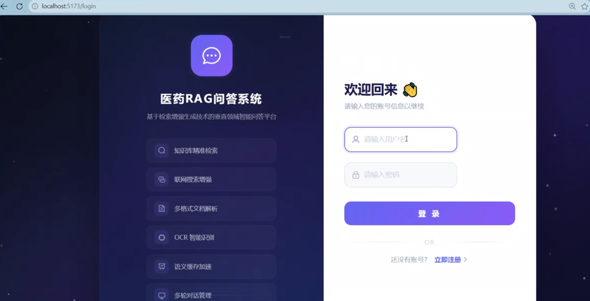

这套系统最花心思的地方不在表单，在审批链：谁审、审几步、什么条件下加签，全部改成可配置的。 组织架构变了，HR 自己改，不用找开发。
请假走邮件和 Excel。审批链写在代码里，组织架构一调整就得改程序；额度靠 HR 手工算，口径不统一；员工不知道自己的单卡在谁那里。
访谈加问卷问了 200 多人。把审批链拆成节点数据，谁审、几步、什么条件加签都能配；6 类角色各看各的数据，员工能看到自己在第几步、下一个审批人是谁。
六周上线是砍出来的。先做申请、额度、流转三件事，报表放二期；技术上用 Flask + MySQL，够用就行，没上重型工作流引擎。
上线后 200 多人使用。请假审批从 1 周压到 1 天，HR 月度统计从 3 天到 1 小时。撤回、销假、转办是二期补的。








截图说明：姓名、工号、审批人均已替换或遮挡，数据为演示环境。
前端 Vue3、后端 Java、检索服务 Python，模型跑在本地。文档解析、向量检索、重排在 Python 侧， 大模型不出内网，回答带出处，能点回原文。
前端打包后由 Nginx 托管，/api 转发到 Spring Boot；Java 负责登录态、会话和聊天记录，Python 负责文档解析与检索；大模型在本地部署，业务数据在 MySQL，向量在 PostgreSQL + PGVector。
先向量召回 30 条，再用重排模型筛到 5 条，然后交给大模型生成。答案标出引用片段，可以点回原文，避免模型自己编。
加了语义缓存，相似的问题直接命中；重复提问不用再跑一遍推理，延迟和算力都省下来。是否走缓存会在答案上标出来。
用户可以勾选只在某几份文档里检索；没命中就直说，不硬答。多用户并发时是按会话隔离的，但前提是单机部署，没有做集群。

录屏 1 分 54 秒，拍于部署环境；界面中的文献与数据均为演示内容。
两个作品里，做事的方式是一样的。
员工说「审批慢」，我先拆成三个数：等多久、驳回多少、HR 汇总花多少时间。拆不出来，方案之间就没法比较，只能凭喜好。
六周上线是砍出来的。申请、额度、流转先做，报表放二期。把「不做什么」写进需求文档，比写「要做什么」更能保住交付。
系统能不能用，评审会上看不出来。部署、联调、报错，我自己做一遍，提需求的时候才知道代价在哪。
每一条都能在上面两个作品里找到依据。
访谈、问卷、角色分层、流程与状态机、PRD。年假系统的 6 类角色和审批链配置是我定的。
SQL、Python、R、SPSS、fsQCA。毕业论文用 265 份问卷做组态分析。平时做指标口径定义和归因。
Python/Flask、MySQL、向量检索、JWT、Nginx 部署与排障。能读代码，也能自己写脚本验证。
中、澳、泰、巴四地跨时区英文协作，外包协同，里程碑管理。校队队长和志愿队副队长那几年，练的是资源不够时把事推完。
课程：产品开发与创新、AI 决策分析与风险管理、智能制造、供应链管理、运营管理、商业分析与数据可视化。导师 Yuquan Meng。
写 Internet Line 接入 SOP 和网络拓扑文档，覆盖 150 条海外线路，成了团队的操作手册；设计采购申请流程并在 Helios 系统里线上化；梳理 100+ 项需求，搭了 500+ 件软硬件资产台账。
主导年假审批系统从 0 到 1，6 周上线，200 多人使用；梳理 300+ 终端资产拓扑，故障定位从 1 小时到 5 分钟。
检索链路与线上部署：文档解析、向量召回与重排的参数调整，三服务联调与排障。
参与三亚白鹭体育场（鲁班奖）工程管理，用甘特图排期和里程碑管控；建立变更需求的跟踪机制，发现 2 项重大安全隐患并推动整改。
运筹学、大数据分析、社会统计与 R、Python 程序设计。校游泳队队长（省运会 200m 自由泳亚军）、志愿队副队长、副班长。
上面两个作品，细节我都能展开讲：当初为什么这么定，放弃了什么。电话最快。